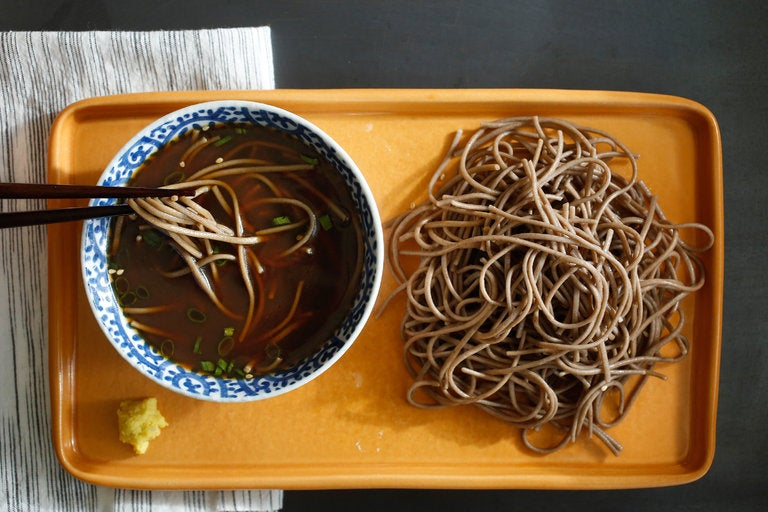

Cold Udon Noodles

Soba is a thin Japanese noodle made from buckwheat. The noodles are served either chilled with a dipping sauce, or hot in a noodle soup. The variety Nagano soba includes wheat flour.
Ingredients
- Soba noodles
- Chicken stock
- Soy sauce
- Mirin
- Finely grated or minced ginger
- Minced scallions
- Toasted sesame seeds
How to make Cold Soba Noodles
- Prior to cooking the noodles have a large bowl of ice water handy, with plenty of ice.
- Bring a large pot of water to a boil, and salt it. Cook noodles until tender but not mushy. Once the noodles are to taste, quickly drain and plunge into the ice water.
- Combine dashi or stock, soy sauce and mirin. Taste, and add a little more soy if the flavor is not strong enough. Serve noodles with garnishes, with sauce on side for dipping (or spooning over).